Rockstargames, Inc. is multinational game developer division which focused on publishing and developing video games for personal computers, game consoles and mobile devices. They are owned by "Take-Two interactive", which also video game developing and publishing company. The web site was first published in December of 1998 by Terry Donovan, Sam Houser, Dan Houser, Jamie King and Gary Foreman.
The "Rockstargames" structure contain eight developing studious and three more which were closed in some reason:
Logo |
Name |
Location |
Years |
Description |
|---|---|---|---|---|
| Rockstar India | Bangalore, India | 2016–present | The another is Technicolor India, created in this year for develop new special series | |
| Rockstar Leeds | Leeds, England | 2004–present | They developed Chinatown Wars, Beaterator, Liberty City Stories and Vice City Stories and ported some games to different game platforms | |
| Rockstar Lincoln | Lincoln, England | 1999–present | They developed Las Vegas Cool Hand and usually doing game testing, transltating and localisation. | |
| Rockstar London | London, England | 2005–present | They developed Manhunt 2 and Midnight Club: Los Angeles games. | |
| Rockstar New England | Andover, Massachusetts | 2008–present | They developed Bully and ported games for the Wii, Xbox 360, PC platforms. | |
| Rockstar North | Edinburgh, Scotland | 1999–present | The first studio which became famous by made Grand Theft Auto, and Manhunt series of games. | |
| Rockstar San Diego | Carlsbad, California | 2003–present | They made the RAGE engine, and develop Rockstar's Table Tennis, the Midnight Club series, both Red Dead Revolver and Red Dead Redemption games. | |
| Rockstar Toronto | Oakville, Ontario | 1999–present | They made PC versions of The Warriors, Grand Theft Auto IV and Episodes from Liberty City. Also they made cult classic film about RC games | |
| Rockstar Japan | Tokyo, Japan | 2005 | Was created for cooperating with Japan gave develop company Capcom | |
| Rockstar Vancouver | Vancouver, British Columbia | 2002–2012 | Was one of the first studious, however it was merged with Rockstar Toronto in 2012. for porting Bully, Max Payne, Max Payne game series for PlayStation 2. | |
| Rockstar Vienna | Vienna, Austria | 2003–2006 | They ported the Max Payne series to consoles, and created some of Manhunt 2 before being closed down |
www.rockstargames.com
It is owned by the parent company Take-Two interactive and running by Rockstargames, Inc. The current web site also was made by Rockstargames team with MARKMONITOR Inc. (the famous publisher, web site developer and web registering company in the USA). Also MARKMONITOR Inc. with Rockstar games, Ins maintain and support this web-site and other web-sites of Rockstar games products and projects. The web site has twelve versions on other languages inside .com domain. For example: Version for Russian Federation will be like www.rockstargames.com/V/RU_ru/. It is not the usual technique for sorting web-site versions.
The web site was changed many times, but it had three main re-designs (see in the visual design part of this report). Firstly, the site was developed for store description and necessary information about game series which were made by theRockstar games.
The main of them is:
Game logo |
Title |
Release years |
Studious |
|---|---|---|---|
| 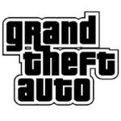 | Grand Theft Auto series | 1997–present | Rockstar North (main titles) Digital Eclipse (Advance) Rockstar Leeds (Stories and Chinatown Wars) |
| 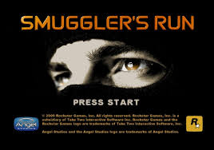 | Smuggler's Run series | 2000–2002 | Rockstar San Diego Rebellion Developments (GBA version of Smuggler's Run) |
| 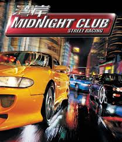 | Midnight Club series | 2000–2008 | Rockstar San Diego Rebellion Developments (GBA version of Street Racing) Rockstar Leeds (PSP version of Midnight Club 3: DUB Edition) Rockstar London (PSP version of Los Angeles) |
| 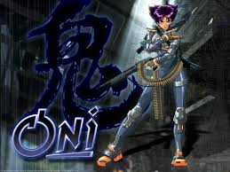 | Oni | 2001 | Bungie (PC version) Rockstar Toronto (PS2 version) |
| 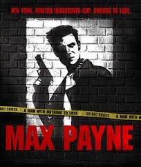 | Max Payne series | 2001–present | Remedy Entertainment (Max Payne and Max Payne 2) Rockstar Studios (Max Payne 3) |
| 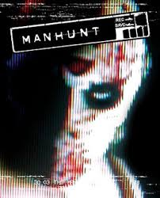 | Manhunt series | 2003–2007 | Rockstar North (Manhunt) Rockstar London (PC and PS2 versions of Manhunt 2) Rockstar Leeds (PSP version of Manhunt 2) Rockstar Toronto (Wii version of Manhunt 2) |
.jpeg) |
Red Dead series | 2004–present | Rockstar San Diego |
| 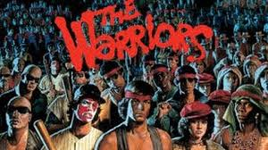 | The Warriors | 2005 | Rockstar Toronto (PS2 and Xbox versions) Rockstar Leeds (PSP version) |
| 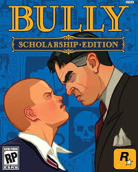 | Bully | 2006 | Rockstar Vancouver Rockstar New England (Scholarship Edition) |
| 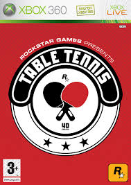 | Rockstar Games Presents Table Tennis | 2006 | Rockstar San Diego |
| 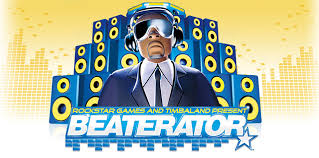 | Beaterator | 2009 | Rockstar Leeds |
| 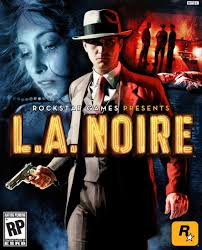 | L.A. Noire | 2011 | Team Bondi (division in Rockstar North studio) |
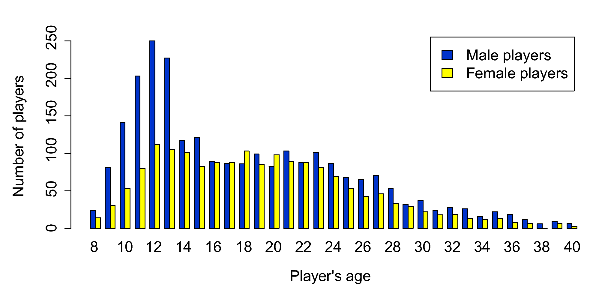
The main audience is game players. Actually it is a better idea to divide game players to usual game players and online game players because usual game players visit the website seasonal (when new games or updates are realized). Online game players often and usual visit the website because they need to check and follow website news and updates, it is necessary for online gaming. This is a mostly male audience between the ages of 8 and 28 and most numbers of gamers between 11 and 13 years.
In this report we will analyze the visual design, navigation and multimedia elements of the rockstargames.com web site and how it affected this site. We will also look through over the usability, accessibility, ownership and copyright and in the end of report I will give some recomendations on improvements for this site, which will be necessary in my opinion.